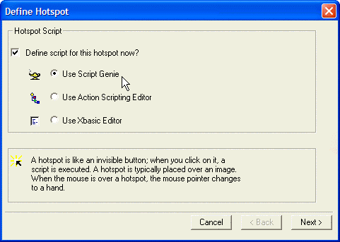
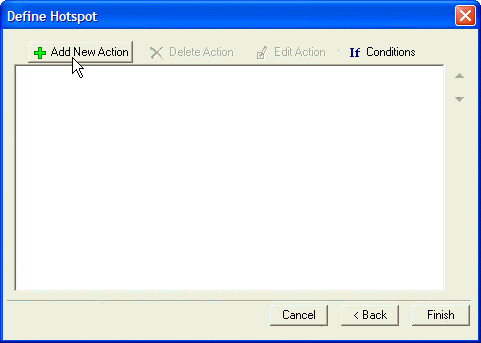
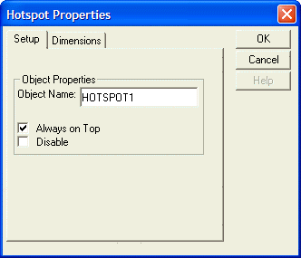

Placing Hotspots
The placement of a hotspot on a form invokes the Button Genie. A hot spot is like a transparent button; when you click on it, a script is executed. When you move your cursor over a hot spot, the mouse pointer changes to a hand.
You might place a hot spot over an image to give it an OnClick event. Or you could use a hot spot as a hidden control about which only you, the developer, knows.
To create a Hotspot object:
Open a form in Design mode.
Select the Hotspot tool
 from the Toolbox and draw
the hot spot on the form.
from the Toolbox and draw
the hot spot on the form.The Define Hotspot dialog appears.

Click Next to define an action script for the Hotspot object.

Hotspot Properties
The Hotspot Properties dialog box (select Properties... from the Hotspot object right-click menu) exposes properties such as Always on Top, which lets you ensure that a hot spot is accessible on all pages of a Tab object.

See Also
Using the Toolbox, Placing a Field on a Form, Hot Spot Properties